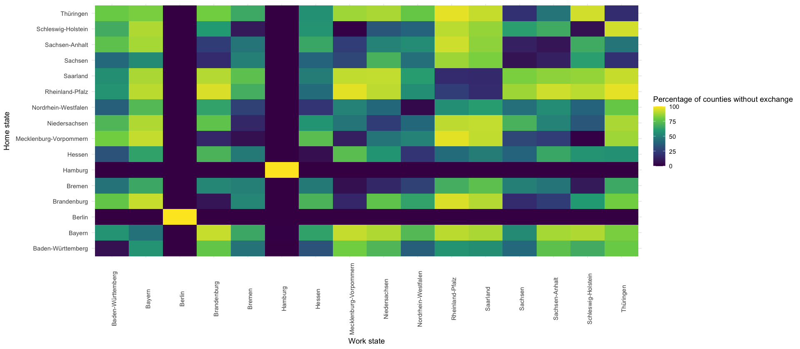
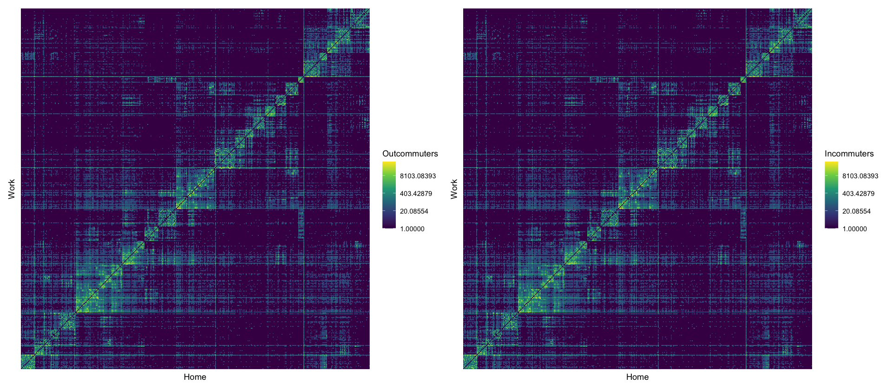

library(here)
source(here("setup.R"))
suppressPackageStartupMessages({
library(readxl)
library(reshape2)
})here() starts at /Users/stefan/workspace/work/phd/thesis
Files taken from - https://statistik.arbeitsagentur.de/SiteGlobals/Forms/Suche/Einzelheftsuche_Formular.html?topic_f=beschaeftigung-sozbe-svb-kreise-merkmale (Sozialversicherungspflichtige Beschäftigte je Kreis / Bundesland) - https://statistik.arbeitsagentur.de/SiteGlobals/Forms/Suche/Einzelheftsuche_Formular.html?topic_f=beschaeftigung-sozbe-krpend (Pendler)
library(here)
source(here("setup.R"))
suppressPackageStartupMessages({
library(readxl)
library(reshape2)
})here() starts at /Users/stefan/workspace/work/phd/thesis
process_commuters <- function(fname) {
suppressWarnings({
state <- read_excel(fname, sheet = "Auspendler Kreise", range = "A4:A4", col_names = F, .name_repair = "unique_quiet")[[1]]
outcommuters <- read_excel(fname, sheet = "Auspendler Kreise", skip = 6, .name_repair = "unique_quiet") %>%
tail(-1) %>%
select("ags_home" = Wohnort, home = 2, "ags_work" = Arbeitsort, work = 4, total = Insgesamt) %>%
fill(ags_home, home) %>%
filter(!is.na(work)) %>%
mutate(total = as.numeric(total))
incommuters <- read_excel(fname, sheet = "Einpendler Kreise", skip = 6, .name_repair = "unique_quiet") %>%
tail(-1) %>%
select("ags_work" = Arbeitsort, work = 2, "ags_home" = Wohnort, home = 4, total = Insgesamt) %>%
fill(ags_work, work) %>%
filter(!is.na(home)) %>%
mutate(total = as.numeric(total))
})
list(
incommuters,
outcommuters
)
}
commuters <- here("data/raw") %>%
# use 2022 data, Eisenach is no longer a county
list.files(pattern = "krpend*", full.names = T) %>%
map(process_commuters)
incommuters <- commuters %>%
map(function(coms) coms[[1]]) %>%
bind_rows()
outcommuters <- commuters %>%
map(function(coms) coms[[2]]) %>%
bind_rows()data/processed/ags_county_dict.csvall_ags <- distinct(
rbind(
select(incommuters, ags = ags_work, name = work),
select(incommuters, ags = ags_home, name = home),
select(outcommuters, ags = ags_work, name = work),
select(outcommuters, ags = ags_home, name = home)
),
ags, name
)
is_county_ags <- function(ags) str_detect(ags, "^[0-9]{5}$")
is_state_ags <- function(ags) str_detect(ags, "^[0-9]{2}$")
all_county_ags <- all_ags %>%
filter(is_county_ags(ags))
write_csv(all_county_ags, here("data/processed/ags_county_dict.csv"))
all_state_ags <- all_ags %>%
filter(is_state_ags(ags)) %>%
filter(!name == "Übrige Regierungsbezirke (Bundesland)")
write_csv(all_state_ags, here("data/processed/ags_state_dict.csv"))data/processed/{incommuters.csv,outcommuters.csv}complete_ags <- all_county_ags$ags
outcommuters_complete <- outcommuters %>%
select(ags_work, ags_home, total) %>%
filter(is_county_ags(ags_work), is_county_ags(ags_home)) %>%
complete(ags_work = complete_ags, ags_home = complete_ags, fill = list(total = 0))
incommuters_complete <- incommuters %>%
select(ags_work, ags_home, total) %>%
filter(is_county_ags(ags_work), is_county_ags(ags_home)) %>%
complete(ags_work = complete_ags, ags_home = complete_ags, fill = list(total = 0))
stopifnot(
"Outcommuters are not unique" = nrow(outcommuters_complete) == length(complete_ags)^2,
"Incommuters are not unique" = nrow(incommuters_complete) == length(complete_ags)^2
)
write_csv(
outcommuters_complete,
here("data/processed/outcommuters.csv")
)
write_csv(
incommuters_complete,
here("data/processed/incommuters.csv")
)inner_join(
incommuters_complete,
outcommuters_complete,
by = c("ags_work" = "ags_home", "ags_home" = "ags_work"),
suffix = c("_in", "_out")
) %>%
group_by(state_work = str_sub(ags_work, 0, 2), state_home = str_sub(ags_home, 0, 2)) %>%
summarize(
pct_no_exchange = mean(total_in + total_out == 0) * 100
) %>%
inner_join(rename(all_state_ags, work = name), by = c("state_work" = "ags")) %>%
inner_join(rename(all_state_ags, home = name), by = c("state_home" = "ags")) %>%
ggplot(aes(x = work, y = home, fill = pct_no_exchange)) +
geom_tile() +
scale_fill_viridis_c() +
theme_minimal() +
theme(axis.text.x = element_text(angle = 90)) +
labs(
x = "Work state",
y = "Home state",
fill = "Percentage of counties without exchange"
)
Hier die passenden Daten ab September ’21 nehmen; ab September 21 ist Eisenach kein eigener Kreis mehr (und kommt in den RKI Zahlen nicht mehr vor).
data/processed/{work_totals.csv,home_totals.csv}work_totals <- read_excel(here("data/raw/svb-kreise-merkmale-d-0-202109-xlsx.xlsx"), sheet = 3, skip = 6, .name_repair = "unique_quiet") %>%
select(name = 1, ags = 2, total = 3) %>%
filter(is_county_ags(ags))
home_totals <- read_excel(here("data/raw/svb-kreise-merkmale-d-0-202109-xlsx.xlsx"), sheet = 4, skip = 6, .name_repair = "unique_quiet") %>%
select(name = 1, ags = 2, total = 3) %>%
filter(is_county_ags(ags))
write_csv(
work_totals,
here("data/processed/work_totals.csv")
)
write_csv(
home_totals,
here("data/processed/home_totals.csv")
)stopifnot(work_totals %>% nrow() == 400)
stopifnot(home_totals %>% nrow() == 400)
p_out <- outcommuters_complete %>%
arrange(ags_home, ags_work) %>%
ggplot(aes(ags_home, ags_work, fill = (total + 1))) +
geom_tile() +
scale_fill_viridis_c(trans = "log") +
theme(axis.text.x = element_blank(), axis.ticks.x = element_blank()) +
theme(axis.text.y = element_blank(), axis.ticks.y = element_blank()) +
labs(x = "Home", y = "Work", fill = "Outcommuters")
p_in <- incommuters_complete %>%
arrange(ags_home, ags_work) %>%
ggplot(aes(ags_home, ags_work, fill = (total + 1))) +
geom_tile() +
scale_fill_viridis_c(trans = "log") +
theme(axis.text.x = element_blank(), axis.ticks.x = element_blank()) +
theme(axis.text.y = element_blank(), axis.ticks.y = element_blank()) +
labs(x = "Home", y = "Work", fill = "Incommuters")
p_out | p_in
WHO declares end of COVID-19 health crisis on May 5th 2023 (https://www.who.int/director-general/speeches/detail/who-director-general-s-opening-remarks-at-the-media-briefing—5-may-2023). Measures in Germany ended shortly before (April 2023), so weu se May 5th as final date (can also see reporting drop sharply in spring 2023).
rki_no_meta <- read_csv(here("data/raw/RKI.csv"))
rki_metadata <- read_csv(here("data/raw/RKI_meta.csv"))
rki_no_meta$IdLandkreis <- str_pad(
rki_no_meta$IdLandkreis,
5,
"left",
"0"
)
rki <- inner_join(rki_no_meta, rki_metadata, by = "IdLandkreis")
rki$Meldedatum <- as.Date(rki$Meldedatum)
rki$Refdatum <- as.Date(rki$Refdatum)rki_county <- rki
county_cases <- NULL
berlin_ids <- 11000:11012
rki_county[rki_county$IdLandkreis %in% berlin_ids, c("Landkreis", "IdLandkreis")] <- list("LK Berlin", "11000")
county_cases <- aggregate(cbind(cases = AnzahlFall, deaths = AnzahlTodesfall) ~ Meldedatum + Bundesland + Landkreis, data = rki_county, sum)
colnames(county_cases)[1:3] <- c("reporting_date", "state", "county")
county_cases <- complete(county_cases,
reporting_date = seq(min(reporting_date), max(reporting_date), by = "1 day"),
nesting(state, county),
fill = list(cases = 0, deaths = 0)
)data/processed/RKI_county.csvcounty_cases %>%
inner_join(
rbind(
rki_metadata,
list(IdBundesland = 11, Bundesland = "Berlin", IdLandkreis = "11000", Landkreis = "LK Berlin")
) %>%
arrange(IdLandkreis),
by = c("county" = "Landkreis")
) %>%
select(date = reporting_date, ags = IdLandkreis, cases, deaths) %>%
write_csv(here("data/processed/RKI_county.csv"))data/processed/RKI_county_weekly.csvWe use the weekly format required in the ECDCs ForecastHub: > Forecast horizons should use the Epidemiological Week (EW) format, defined by the US CDC. Each week starts on Sunday and ends on Saturday.
county_cases %>%
inner_join(
rbind(
rki_metadata,
list(IdBundesland = 11, Bundesland = "Berlin", IdLandkreis = "11000", Landkreis = "LK Berlin")
) %>%
arrange(IdLandkreis),
by = c("county" = "Landkreis")
) %>%
select(date = reporting_date, ags = IdLandkreis, cases, deaths) %>%
group_by(date = ceiling_date(date, "week", week_start = 7), ags) %>%
summarize(cases = sum(cases), deaths = sum(deaths)) %>%
write_csv(here("data/processed/RKI_county_weekly.csv"))